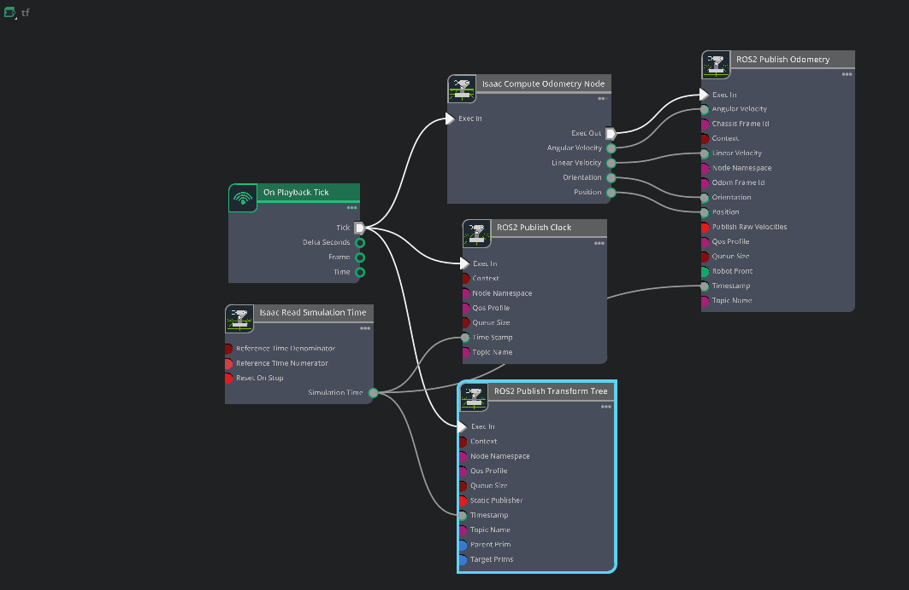
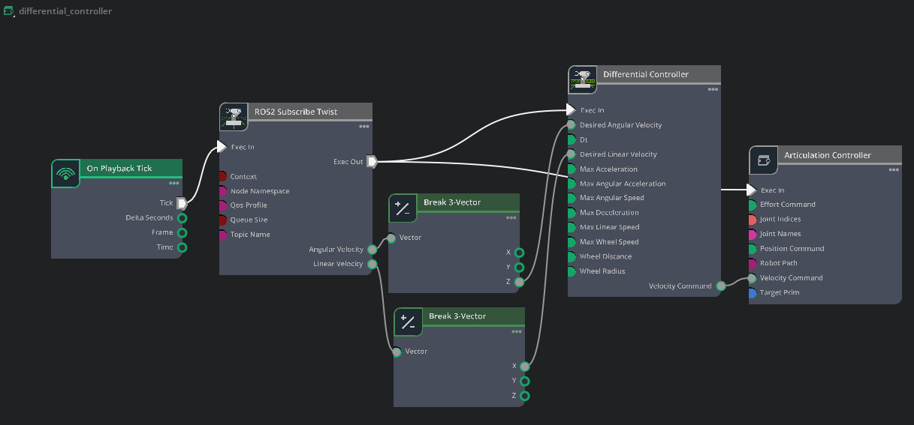
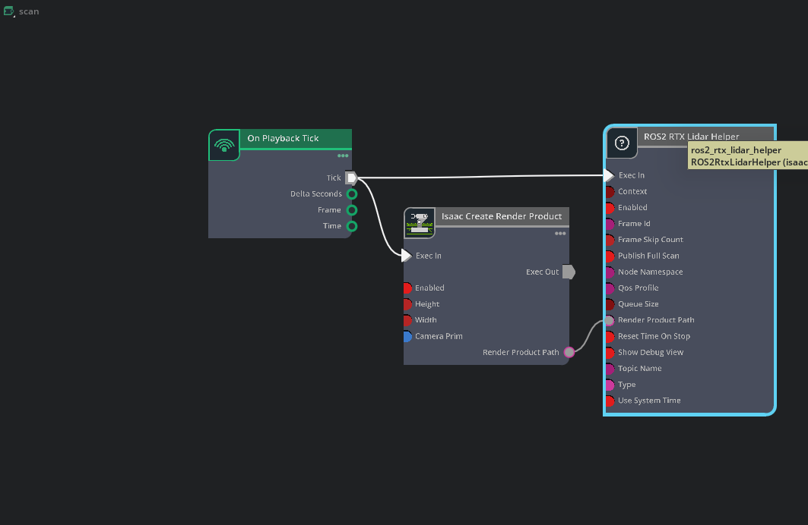

Autonomous maze navigation on a Nova Carter
ROS2Nav2SLAM ToolboxAMCLIsaac SimRViz
Demonstration
Architecture visuals
TF action graph

Differential controller

LIDAR render pipeline

What it is
A complete ROS2 autonomy stack running on a Nova Carter inside Isaac Sim. The robot enters a maze it has never seen, builds a map of it with SLAM, localizes itself against that map with AMCL, and uses Nav2 to plan and follow a path to a goal. No human input at any point after the goal is set.
Building the transform tree
To initialize Nav2, we need to publish to both /tf and /tf_static. To accomplish this, I used Isaac Sim's action graph editor, publishing transformations between important sensory functions.
System architecture
The simulated robot in Isaac Sim and the ROS2/Nav2 stack communicate over standard ROS2 topics and transforms. Each platform both publishes and subscribes where appropriate so the pipeline looks like a set of cooperating producers and consumers:
- /cmd_vel (geometry_msgs/Twist) — velocity commands from Nav2/controllers to the simulated base.
- /odom (nav_msgs/Odometry) — odometry published by the simulator or robot state publisher.
- /scan (sensor_msgs/LaserScan) — lidar scans published by the simulated sensor and consumed by SLAM and local planners.
- /map (nav_msgs/OccupancyGrid) — SLAM output consumed by localization and planners.
- /tf / /tf_static — frame transforms that connect sensors, robot base, and world frames.
- /amcl_pose (geometry_msgs/PoseWithCovarianceStamped) — estimated pose used by navigation.
- /goal_pose or action goal topics — high-level goals sent to Nav2.
In practice Isaac Sim publishes sensor topics and listens for /cmd_vel, while ROS2 components publish map/pose and subscribe to sensor streams and goals. This publisher/subscriber split makes the system resilient and modular: either side can be swapped or replayed independently for debugging.
The SLAM map came out warped. Walls that were straight in the maze appeared as curves in the occupancy grid.
The issue was caused by a noticeable difference in topic rate between the lidar (slower) and the odometry (fast). Low loop time of lidar compared to higher loop time of odom creates conflict where robot moves and updates position half-way between a lidar time, placing each scan at a slightly rotated pose. This overall creates an inconsistent and buggy SLAM map. Fixed by raising the RTX LiDAR's scanRateBaseHz in Isaac Sim to 20 Hz.
Result
End to end navigation through an unmapped maze, including the mapping and localization stages, running entirely in simulation on the Nova Carter platform.